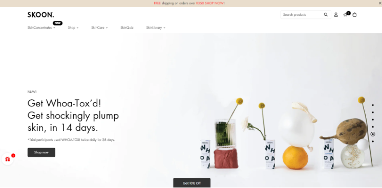
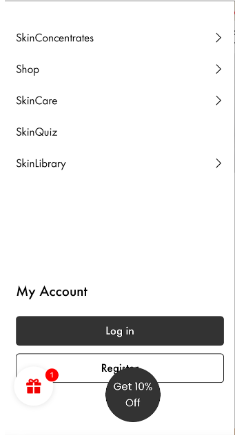
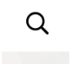
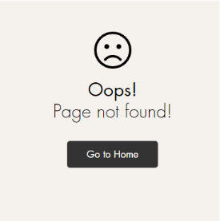
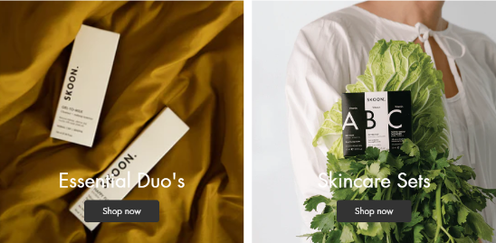
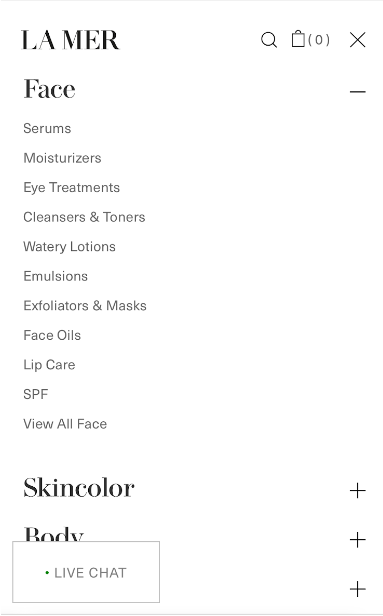

As my case study I have chosen the SKOON website. SKOON is a South African skin care and beauty company. Here is the link to their website: SKOON. The website aims to sell the SKOON brand of skin care products as well as provide any additional information its customers/ potential customers may need when considering to buy from them. The website also provides customers with news regarding upcoming products, sales or discounts on products as well as the brand's values, certifications, articles regarding skin care and standard contact information. Customers can also order products directly from their website, this is one of the website's primary functions. Upon the first look at the website it appears that the primary target audience is young South African women, probably those in their early and late twenties who have an interest in the natural/ holistic skin care trends, most of the models used on the site are young women and in their skin care log section there are articles are about acne. Although in general the target audience is just women. This essay will look at and make an evaluation on both the UX and UI as well as take into consideration issues of ethics pertaining to ideas of interactive design.
When evaluating the UX of the website usability and functionality will be considered. This is what the home page looks like when you open it: 
All the navigation appears at the top of the page in the navigation bar when assessing the website on a computer provided the window is full screen. However when using a mobile device or when viewing the page in let's say half screen, all the navigation is presented in a side panel that must be pressed or clicked to be viewed. The same information or options are shown in both causes and the icon that users need to press in order to see the navigation is one that is conventionally used; the website assumes that the user will easily be able to determine what is meant. This is the icon used to indicate the navigation:
This is how the navigation appears when assessing the site on a mobile device: 
In both cases the same information is given however there are a few differences in the way a user would interact with the navigation. In the full screen the user is only required to hover their mouse over each category to view what is contained in each category however on mobile or a different sized window it would require the user to specifically click on the arrow icons that appear next to each category to gain more information about what each one contains. While this adheres to the idea of the 3-click rule (Zeldman, 2001) the use of arrows in this context leaves room for user error because of how the layout is structured. A user may assume that in order to see what more information they can simply click on the category and the information will be present but what happens instead is that the user is taken to the categories page. This isn’t good because making unnecessary errors has the potential to affect the users feelings and behaviours when continuing to interact with the site (Preece et al.,2015, p15). Exiting the navigation requires users to click outside of the panel, this is a pretty standard and is used on multiple other platforms, therefore pretty intuitive provided the user has interacted with other online stores/ service providers before. In order to return to the home page the user would need to click on the SKOON logo that appears at the top of every page, this is a bit ambiguous because there is no information that indicates that this is an interactive element however it is not an uncommon practice an as the the target audience is presumably fairly young there is a high chance they would be familiar with this convention.
Another important element to consider when assessing the usability of the site is the search functions. The SKOON website indicates its search function by using the standard search icon: 
As this is standard practice it is clear what is meant, therefore the correct information is effectively conveyed to the user. When viewing the site full screen on a computer however the user is presented with a search bar but upon clicking it it opens the same panel as it would on mobile or different sized window, instead of allowing the user to immediately type in their search. In terms of the actual search functionality itself; once the user clicks on the search icon they are presented with a search bar as well as a list of the site's most popular searches but upon clicking on the links provided the user will be directed to an error screen, it appears that none of the 5 links given work despite the fact that each product is stocked on the website if they are searched for specifically. This error negates the convenience of listing the popular products at all and could lead customers to believe that these products are unavailable. The error screen itself however easily allows the user to return to the home screen. Here is an image of the error screen: 
The site is able to recognise keywords or vague prompts in order to provide the user with the appropriate product. The search function appears to only be applicable to products, users are unable to search for the other information given on the site such as beauty articles, potential sales or discounts or for example the terms of service. The search function is purely for the use of finding a product, if the user requires access to other information they will need to navigate the page to find it themselves.
Another aspect of the website to consider is the overall layout or the way that content is organised on the site. All the store details can be found at the top of the page even in the navigation bar everything to do with the actual products themselves is presented first. This is understandable as the website's primary function is to sell SKOON products. Further down the page information is given about the brand and its values, charities the brand contributes to. There is a video player that when pressed plays a video ad for some of their products. Further down there is a list of articles about skin care and such. Right at the bottom of the webpage users are provided with other general information such as the terms of service, privacy policy, contact information, links to the brands social media and the option to input their email (the user is also presented with a pop up that allows them to input their email when they first visit the site.) Putting contact information as well as other information (terms, privacy policy, about, ect.) at the bottom of the site is a common practice when it comes to online stores so users may expect it to be presented in this way; this is in accordance with Jakob’s Law (Nielsen,n.d.).
Next to evaluate is the UI. UI or user interface is the point at which human computer interaction occurs(). Things to consider are the aesthetics and whether the site is visually pleasing as it is stated in the Hassenzahl and Tractinsky reading that beauty is an important factor in ensuring that the user has a satisfying experience (Hassenzahl et al. 2006, p5). Taking a look at the SKOON home page and its layout, the element that the user will come across first is the panel of cycling images displaying products that the company is currently promoting as well as discounts they are offering. Each image has a main title that is clearly indicated by the use of font sizes and emphasis. Because the items are cycling at a set speed, in order to read the rest of the information the user is required to click. This is both good and bad. Good because it allows the user to quickly determine whether the items in question are of interest and bad because the speed at which the images cycle at may be too fast for some customers to read this has the potential to cause unnecessary stress as it can feel a bit like a quick time event in a video game especially because the duration of time is indicated. The site uses visual hierarchy to indicate important information to the viewer. When a user presses an image the cycle stops, it's unclear whether this is intentional or not because the timer still runs but once it is complete it doesn’t change. The typography of the site is cohesive and readable in most cases except in the below examples: 
Where the colour of the font makes the words difficult to read because it does not contract enough with the background. This is not an issue on a mobile device. The general colour palette of the website is consistent and in accordance with the brand's image utilising mostly earthy tones as well as whites and greys which give the site a clean and minimal feel. On a computer each element of the site is focused and easily clickable however on mobile in order to move between items or articles the user is required to scroll horizontally to items this leaves room for error as it is easy to make a mistake. A possible solution to this could be to make each item snap into focus when scrolling this eliminates the possibility of a user scrolling in between items. On a computer buttons respond when the mouse is hovered over them and in a full screen window more information about both icons and products is given. Similarly when hovering over products the user is presented with the option to quickly view, add to the wishlist and choose options that do not apply when viewing in a window of a different size or mobile.
In consideration of the ethics of the site and its interactive design, there are only a few areas of concern. One thing is that shortly after arriving on the site the user is greeted with a pop up message indicating that the visitor will receive a free gift if they purchase from the site.
The intention of this would be to further encourage the user to spend money on the site however when moving to the checkout after adding other items there is no indication that the item has be added to the cart furthermore there is no way to remove the pop up so it ends up hindering the view of the site, while this is not an issue on computer it maybe irritating when using a smaller device. After spending some time on the site another two pop ups appear asking for the user's email. When both pop ups are closed an icon offering 10% of remains at the bottom of the page, it appears there on all pages except when making the payment.
Similarly there is a message at the top of the page telling the user that they will get free shipping if their purchase is over a certain amount. The language used makes it seem like this offer is only available for a limited time which may influence users to buy more than they originally set out to.
Another concern is the lack of transparency surrounding privacy policies, most notably the site does not ask users for their cookie preferences off the bat and in order for a user to find this information they would have to scroll to the bottom of the website and read through the privacy policy themselves.
In conclusion SKOON’s website has a clean and somewhat minimal design, for the most part effectively adhering to Jakob’s law as the experience mirrors the conventions of other skin care product websites. There are a few usability concerns one being the arrow icons in the navigation bar a possible solution to this could be if the arrow was changed to a plus icon to communicate that there are other subcategories as seen on other skin care websites such as La Mer: 
In conclusion SKOON’s website has a clean and somewhat minimal design, for the most part effectively adhering to Jakob’s law as the experience mirrors the conventions of other skin care product websites. There are a few usability concerns one being the arrow icons in the navigation bar a possible solution to this could be if the arrow was changed to a plus icon to communicate that there are other subcategories as seen on other skin care websites such as La Mer:
Goldberg, P.(n.d.). Crash Course In User Design [+] Interactive Design (Lecture slides). University of the Witwatersrand, Johannesburg.
Hassenzahl, M., & Tractinsky, N. (2006). User experience - a research agenda. Behaviour & Information Technology, 25(2), 91-97.
Nielsen, J. (1994) 10 usability heuristics for user interface design, Nielsen Norman Group. Available at: https://www.nngroup.com/articles/ten-usability-heuristics/
Nielsen, J. (2011) Top 10 mistakes in web design, Nielsen Norman Group. Available at: https://www.nngroup.com/articles/top-10-mistakes-web-design/
Preece, J., Rogers, Y., & Sharp, H. (2015). Interaction design: Beyond human-computer interaction (4th ed.). John Wiley & Sons.
Yablonski, J. (no date) Jakob's law, Laws of UX. Available at: https://lawsofux.com/jakobs-law/